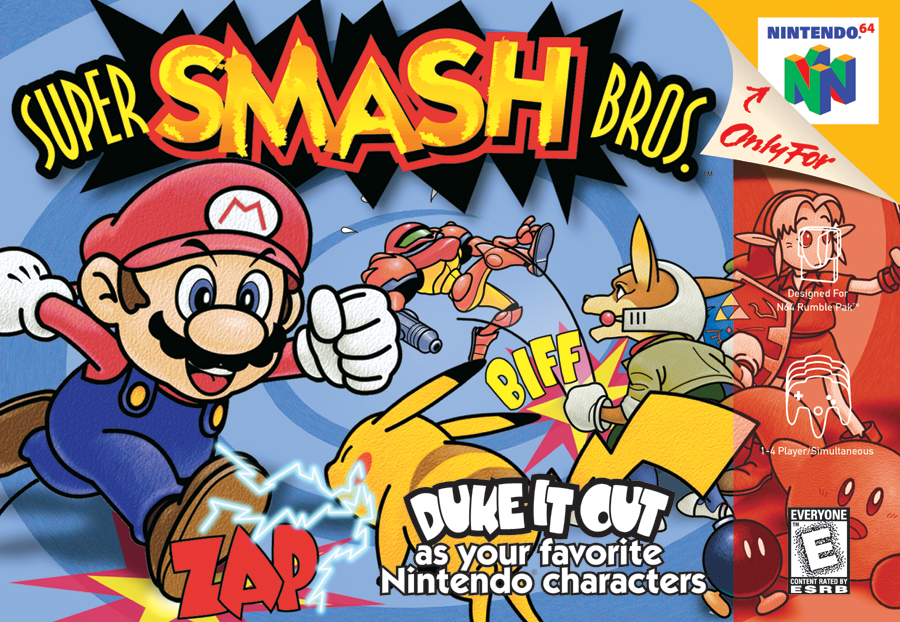
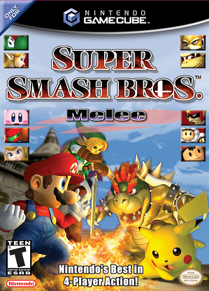
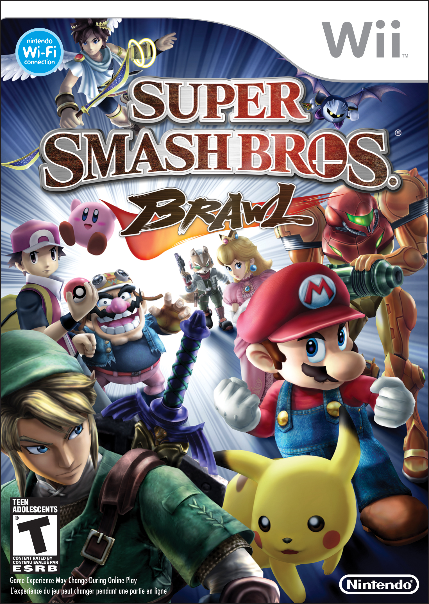
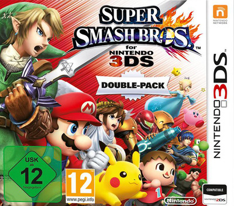
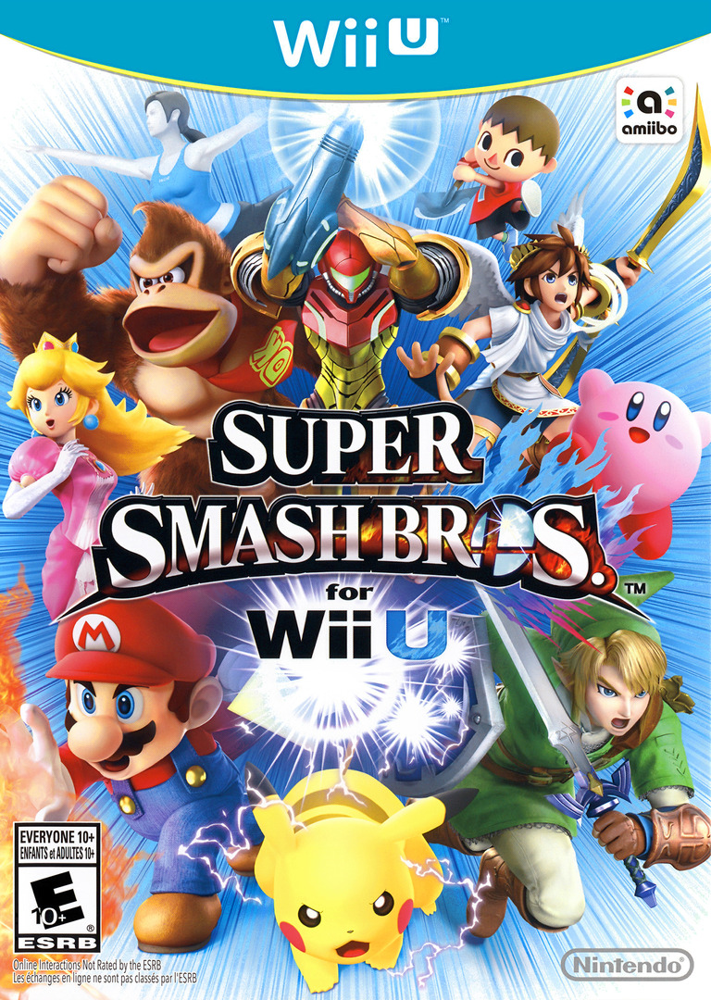
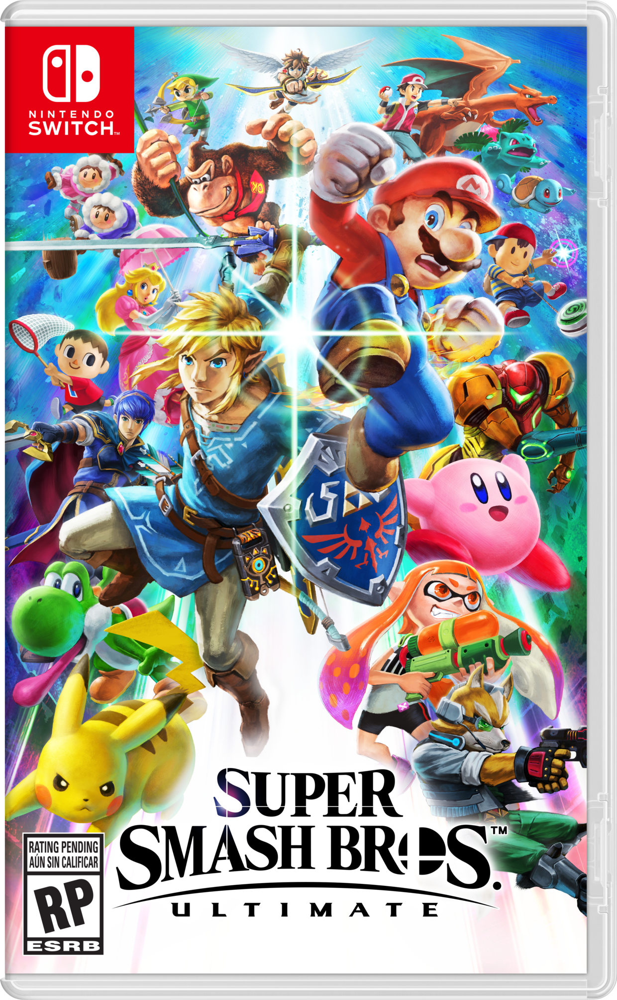

Super Smash Bros. was released for the Nintendo 64 in Japan on January 21, 1999, in North America on April 26, 1999, and in Europe on November 19, 1999. The first game of the series, it was developed by HAL Laboratory and published by Nintendo.
Characters: 12
Stages: 9
Super Smash Bros. Melee was released for the Nintendo GameCube in Japan on November 21, 2001, in North America on December 3, 2001, in Europe on May 24, 2002, and in Australia on May 31, 2002. The second game of the series, it was also developed by HAL Laboratory and published by Nintendo.
Characters: 25
Stages: 29
Super Smash Bros. Brawl was released for the Nintendo Wii in Japan on January 31, 2008, in North America on March 9, 2008, in Europe on June 26, 2008, and in Australia on June 27, 2008. The third game of the series, it was developed by Sora Ltd., HAL Laboratory and Game Arts and published by Nintendo.
Characters: 35
Stages: 41
Super Smash Bros. for Nintendo 3DS and Wii U (or Super Smash Bros. 4) was released for the Nintendo 3DS, and later the Wii U, at various points throughout 2014. The fourth game of the series, it was developed by Bandi Namco Studios and Sora Ltd. and published by Nintendo.
Characters: 58
Stages: 42 (3DS) / 55 (Wii U)
 Super Smash Bros. Ultimate was released for the Nintendo Switch worldwide on December 7, 2018. The fifth game of the series, it was developed by Bandi Namco Studios and Sora Ltd. and published by Nintendo.
Characters: 65 (as of July 22, 2019)
Stages: 103
